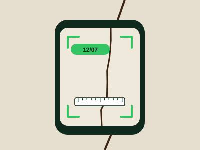
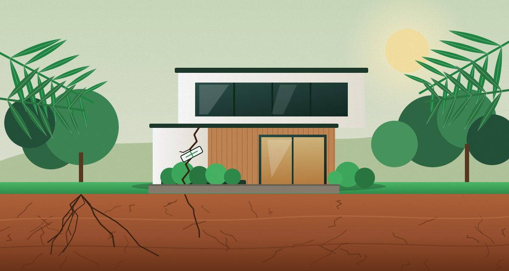
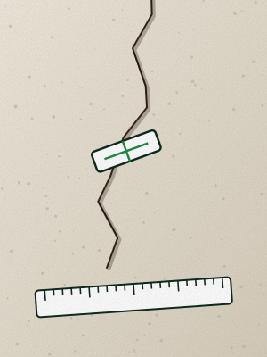
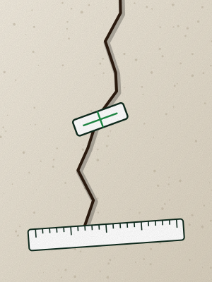
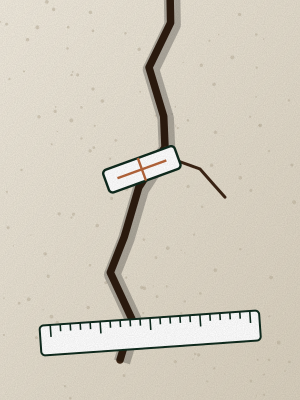
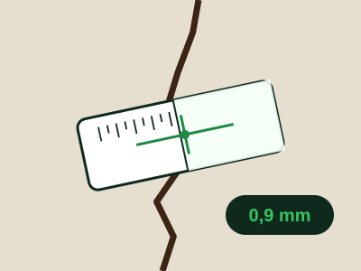
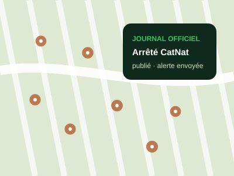
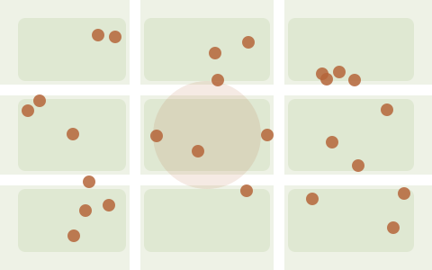

01
Photographier selon un protocole
Même cadrage, même distance, un repère gradué dans le champ. Le guide vous montre l'ancienne photo pour vous caler dessus.
Pour les maisons posées sur des sols argileux, qui gonflent l'hiver et se rétractent l'été.
Lézarde vous aide à mesurer et dater l'évolution de vos fissures, à suivre la reconnaissance de catastrophe naturelle de votre commune et à remettre à votre assureur un dossier complet, dans les délais.

Le retrait-gonflement des argiles fissure des maisons partout en France. Quand vient le moment d'être indemnisé, le dossier se joue souvent sur un point : montrer, dates à l'appui, que la fissure évolue.
Une photo isolée ne dit pas grand-chose. Une série de relevés pris au même endroit, avec la même règle, à des dates précises, montre que le sol travaille5.




Même cadrage, même distance, un repère gradué dans le champ. Le guide vous montre l'ancienne photo pour vous caler dessus.

Largeur avec un fissuromètre ou une jauge, longueur au mètre. Lézarde trace la courbe et signale quand une fissure s'aggrave.

Signalement en mairie, demande de reconnaissance, arrêté au Journal officiel : chaque étape est datée, et le délai de 30 jours pour déclarer est décompté.
Chronologie, photos datées, mesures, courbes, références de l'arrêté et liste des pièces : un document prêt à imprimer ou à envoyer.
22 jours
Le dossier est prêt : 3 fissures, 19 relevés, 19 photos.
La demande de reconnaissance de catastrophe naturelle repose sur les signalements des habitants. Lézarde les collecte, les localise et les met en forme pour la préfecture.
Voir l'offre communesChaque foyer signale ses dommages en quelques minutes, avec photos et dates, depuis un lien partagé par la mairie.

Les signalements apparaissent rue par rue, avec leur ancienneté et leur gravité, pour repérer les secteurs touchés.
Liste des foyers, période des dommages, pièces jointes : tout ce qu'il faut pour remplir la demande communale.
0 €
Pour tous les propriétaires qui constatent des fissures.
49 € une fois
Quand l'arrêté est publié et qu'il faut déclarer vite.
290 € par an, dès
Pour les mairies qui préparent une demande de reconnaissance.
Non. Lézarde vous aide à documenter vos fissures et à respecter les délais. L'avis sur la cause des dommages revient à un expert, et vos droits dépendent de votre contrat et de l'arrêté de catastrophe naturelle.
Dès que vous constatez les dommages, sans attendre. Une fois l'arrêté de catastrophe naturelle publié au Journal officiel, vous disposez de 30 jours pour déclarer le sinistre3. Lézarde décompte ce délai à partir de la date de publication que vous indiquez.
Toutes les deux semaines en période sèche, une fois par mois le reste de l'année. L'essentiel est la régularité et la même méthode à chaque fois.
Dans cette version, sur votre appareil uniquement : rien n'est envoyé. Pensez à exporter une sauvegarde régulièrement depuis l'application.
Signalez vos dommages par écrit à la mairie, avec photos et dates, et invitez vos voisins touchés à faire de même. La commune dispose de 24 mois après le début du phénomène pour déposer sa demande4.
Le premier relevé prend deux minutes. Les suivants, encore moins.
Commencer mon suivi